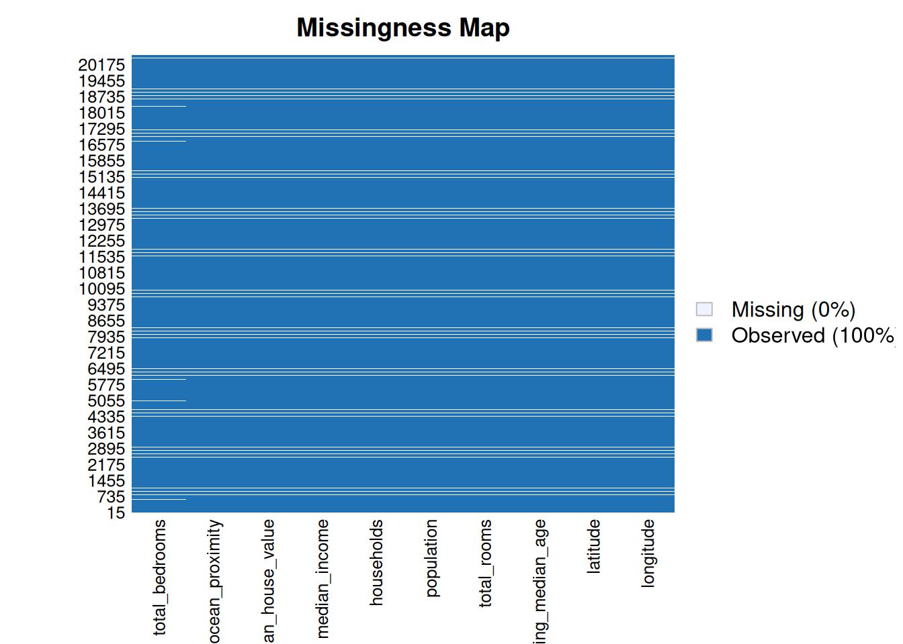

Chapter 1 EDA
Carguemos las librerias
Muestrame las 5 primers filas
## longitude latitude housing_median_age total_rooms total_bedrooms population
## 1 -122.23 37.88 41 880 129 322
## 2 -122.22 37.86 21 7099 1106 2401
## 3 -122.24 37.85 52 1467 190 496
## 4 -122.25 37.85 52 1274 235 558
## 5 -122.25 37.85 52 1627 280 565
## households median_income median_house_value ocean_proximity
## 1 126 8.3252 452600 NEAR BAY
## 2 1138 8.3014 358500 NEAR BAY
## 3 177 7.2574 352100 NEAR BAY
## 4 219 5.6431 341300 NEAR BAY
## 5 259 3.8462 342200 NEAR BAYLa estructura de los datos
## 'data.frame': 20640 obs. of 10 variables:
## $ longitude : num -122 -122 -122 -122 -122 ...
## $ latitude : num 37.9 37.9 37.9 37.9 37.9 ...
## $ housing_median_age: num 41 21 52 52 52 52 52 52 42 52 ...
## $ total_rooms : num 880 7099 1467 1274 1627 ...
## $ total_bedrooms : num 129 1106 190 235 280 ...
## $ population : num 322 2401 496 558 565 ...
## $ households : num 126 1138 177 219 259 ...
## $ median_income : num 8.33 8.3 7.26 5.64 3.85 ...
## $ median_house_value: num 452600 358500 352100 341300 342200 ...
## $ ocean_proximity : chr "NEAR BAY" "NEAR BAY" "NEAR BAY" "NEAR BAY" ...Veamos si hay datos faltantes
## NA_longitude NA_latitude NA_housing_median_age NA_total_rooms
## 1 0 0 0 0
## NA_total_bedrooms NA_population NA_households NA_median_income
## 1 207 0 0 0
## NA_median_house_value NA_ocean_proximity
## 1 0 0Otra forma de detectar valores faltantes

Ahora, hagamos imputación de datos faltantes
Verifiquemos si tiene datos faltantes
## NA_longitude NA_latitude NA_housing_median_age NA_total_rooms
## 1 0 0 0 0
## NA_total_bedrooms NA_population NA_households NA_median_income
## 1 0 0 0 0
## NA_median_house_value NA_ocean_proximity
## 1 0 0Vamos a convertir la variable ocean_proximity en un factor